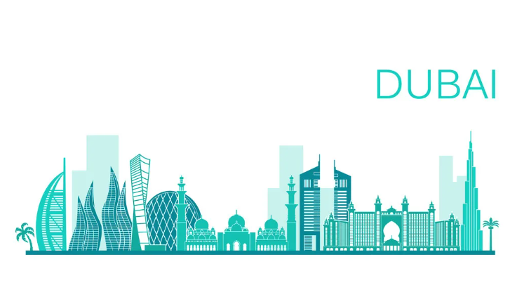
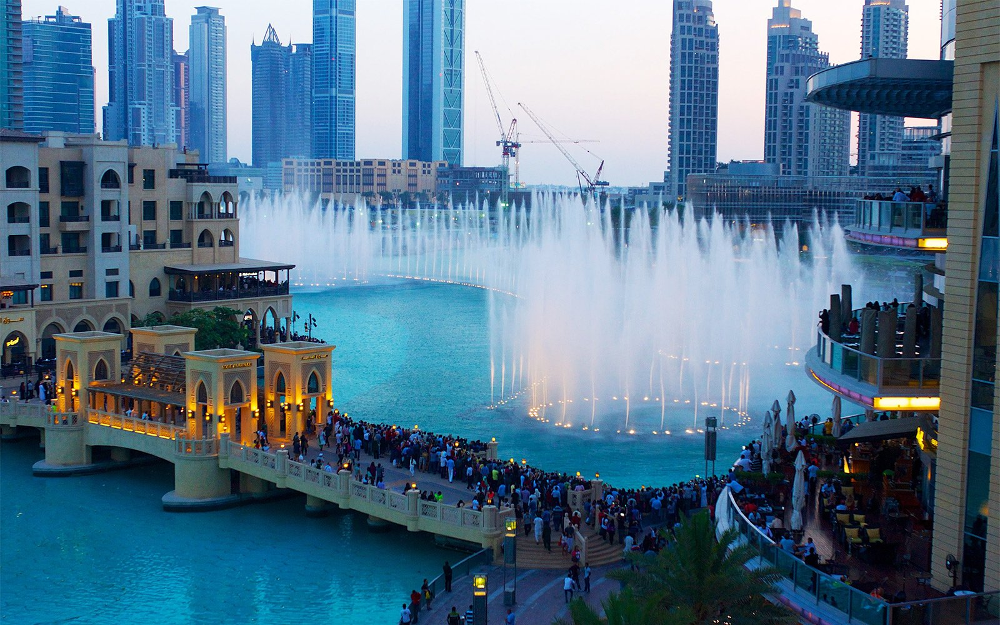
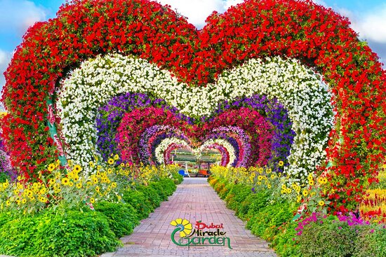
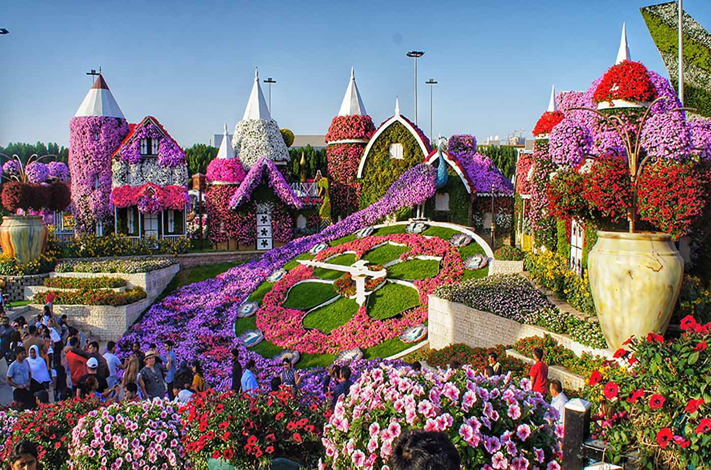
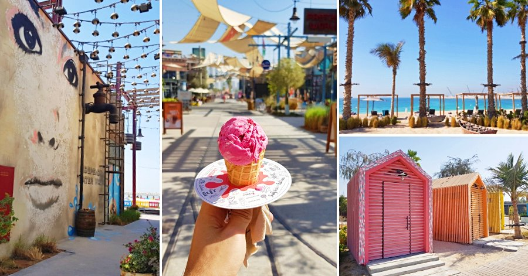

Beaches, sunshine, entertainment – Dubai has it all. It's no wonder we've been named Tripadvisor's top destination in the world for 2022. Come see the magic.
1. The Burj al-Arab
The Burj al-Arab, in Dubai, is one of the few 7* hotels in the world.
Of course, staying in a luxury suite with sea view is pretty expensive! But even if this hotel isn’t for everyone’s budget, I have good news: You can enter the most luxurious hotel in the world for a few hours by reserving a lunch, a snack or dinner at the Burj al-Arab restaurant.
2. The Burj Khalifa

The Burj Khalifa is for sure THE place to visit in Dubai!
The tallest skyscraper in the world (828 meters) has been open to the public since 2010 and has quickly become the symbol of the city. From there, you can enjoy an extraordinary panorama over the whole city!
You should visit the Burj Khalifa in the evening, to enjoy the view over the illuminated city from the highest observation deck in the world.
3. The Dubai Fountain

This fountain (the largest water fountain in the world) is one of Dubai’s main tourist attractions.
The fountain show takes place several times a day on the artificial lake located at the exit of Dubai Mall, at the foot of Burj Khalifa.
You must attend it during your trip to Dubai!
The best is to go there at nightfall, when the tower is illuminated. It’s simply magical to watch the ballet of water jets dancing to music.
The show takes place every 30 minutes between 18.00 and 23.00 (there are also a few during the day).
The access is free of charge.
Quick tip: To get a great viewpoint, try to be there as early as possible, as the fountain show attracts thousands of tourists!
4. Miracle Garden


More than 150 million flowers are waiting for you at Dubai Miracle Garden! You know it, in Dubai, when they do something, they are really pushing it it far. So you can imagine that the Miracle Garden is much more than just a garden. During your visit, you will be able to admire impressive structures representing Disney characters and even a replica of an A380 completely covered with flowers. The Miracle Garden is listed several times in the Guinness Book of Records, notably as the largest flower garden in the world.
5. La Mer

La Mer is another nice place to walk next to the sea in Dubai.
There, you can find many restaurants as well as a long promenade and several beaches. You can also rent deck chairs for 100 AED/person.
La Mer also features a water park: Laguna Waterpark, with several slides, a wave pool etc.. An excellent idea if you are visiting Dubai with your children!